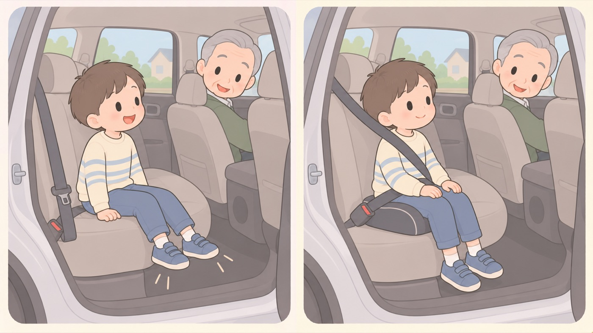

はじめに
車と自転車のきまりは、思っているより新しい
チャイルドシートは2000年、後部座席のシートベルトは2008年、全年齢のヘルメットは2023年から
車と自転車のきまりは、自分が子どもだった頃には無かったものが多くあります。「昔はそんなの無かった」は事実ですが、いまは違います。祖父母の車に乗せるときに、ここがいちばんずれます。

左は危険な例、右は安全な例です。- すること：よその車に乗せるときは、いまのきまりとして伝える
祖父母や友人の車に乗せる機会が増えます。相手が子育てをした時期によっては、チャイルドシートも後部座席のシートベルトも義務ではありませんでした。責めるためではなく、いまのきまりとして伝えます。ジュニアシートを1台、車に積んでおくほうが早いこともあります。 - すること：お下がりのチャイルドシートは、基準の表示を見る
2023年9月より前に作られたものは、旧基準（R44）の可能性があります。本体に表示があります。身長で適合が示されているものがR129チャイルドシートの国際的な安全基準。旧基準のR44に、側面衝突の試験と身長による区分が加わっている。i-Sizeとも呼ばれる。です。 - しないこと：「自分のときは大丈夫だった」を根拠にしない
きまりが無かった時代に事故が少なかったわけではありません。警察庁は、後部座席でシートベルトを着用していない場合の死亡率が、着用している場合と比べて高いことを交通事故分析の結果として示しています。 - すること：自転車のヘルメットは、大人の分も考える
2023年4月から、努力義務法律が「〜するよう努めなければならない」と定めたもの。違反しても罰則はないが、守ることを法律が求めている状態を指す。は全年齢です。子どもにだけかぶらせて、親がかぶらない状態は、いまのきまりとずれています。
いつから変わったか
- チャイルドシート … 6歳未満への使用義務は2000年4月1日から。 それ以前は、使わずに乗せても違反ではありませんでした
- チャイルドシートの安全基準 … 新基準R129チャイルドシートの国際的な安全基準。旧基準のR44に、側面衝突の試験と身長による区分が加わっている。i-Sizeとも呼ばれる。が日本で適用されたのは 2014年1月26日。2023年9月以降は、R129チャイルドシートの国際的な安全基準。旧基準のR44に、側面衝突の試験と身長による区分が加わっている。i-Sizeとも呼ばれる。に適合したものだけが製造できます。 体重ではなく身長で区分し、側面衝突の試験が加わり、 生後15か月まで前向きにしないことが求められます
- 後部座席のシートベルト … 義務になったのは2008年6月1日から。 「後ろは締めなくていい」は、それ以前の話です
- 自転車のヘルメット … 13歳未満の保護者の努力義務法律が「〜するよう努めなければならない」と定めたもの。違反しても罰則はないが、守ることを法律が求めている状態を指す。が2008年6月1日から。 全年齢の努力義務法律が「〜するよう努めなければならない」と定めたもの。違反しても罰則はないが、守ることを法律が求めている状態を指す。になったのは2023年4月1日からです
- 幼児2人同乗 … 2009年7月から、安全基準を満たす 「幼児二人同乗用自転車」に限って認められました。それ以前は禁止されていました
この項目の根拠
- チャイルドシートの着用指導マニュアル（内閣府・PDF）（新しいタブで開きます）
平成11年5月10日公布・平成12年4月1日施行の道路交通法の一部を改正する法律により、自動車の運転者はチャイルドシートを使用しないで6歳未満の幼児を乗車させて自動車を運転してはならないこととされたこと。 - Vol.653 より安全なチャイルドシートの使用を！（消費者庁）（新しいタブで開きます）
2023年9月以降は新安全基準であるUN-R129に適合したもののみが製造可能となっていること。装着基準がこれまでの体重による区分から身長による区分に変わったこと。前後からだけでなく側面衝突時の安全評価が追加されたこと。生後15か月までのこどもは前向きでチャイルドシートを使用しないよう注意する必要があること。 - 全ての座席でシートベルトを着用しましょう（警察庁）（新しいタブで開きます）
シートベルトを備えている自動車を運転するときは、運転者自身が着用するとともに、助手席や後部座席の同乗者にも着用させなければならないこと。後部座席でのシートベルトの着用は全ての道路で義務であること。 - 頭部の保護が重要です 〜自転車用ヘルメットと頭部保護帽〜（警察庁 交通局）（新しいタブで開きます）
改正道路交通法の施行により、令和5年4月1日から全ての自転車利用者のヘルメット着用が努力義務化されたこと。自転車乗用中の交通事故で亡くなられた方の約5割が頭部に致命傷を負っていること。 - 令和5年交通安全白書 特集「自転車の安全利用の促進について」（内閣府）（新しいタブで開きます）
平成19年6月の道路交通法改正により、児童・幼児の自転車乗用時に保護者が乗車用ヘルメットを着用させる努力義務が導入され、平成20年6月1日に施行されたこと。令和4年4月の改正により全ての年齢層の自転車利用者に努力義務が課され、令和5年4月1日に施行されたこと。 - 平成22年警察白書「交通安全教育と交通安全活動」（幼児二人同乗用自転車・警察庁）（新しいタブで開きます）
自転車の幼児二人同乗については従来禁止されていたが、平成21年7月、各都道府県において、安全性等の要件を満たす「幼児二人同乗用自転車」に限って幼児二人同乗が認められることとなったこと。